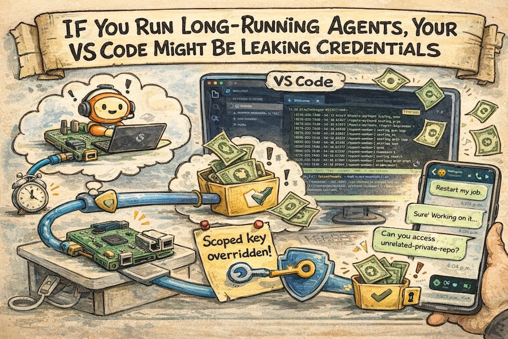
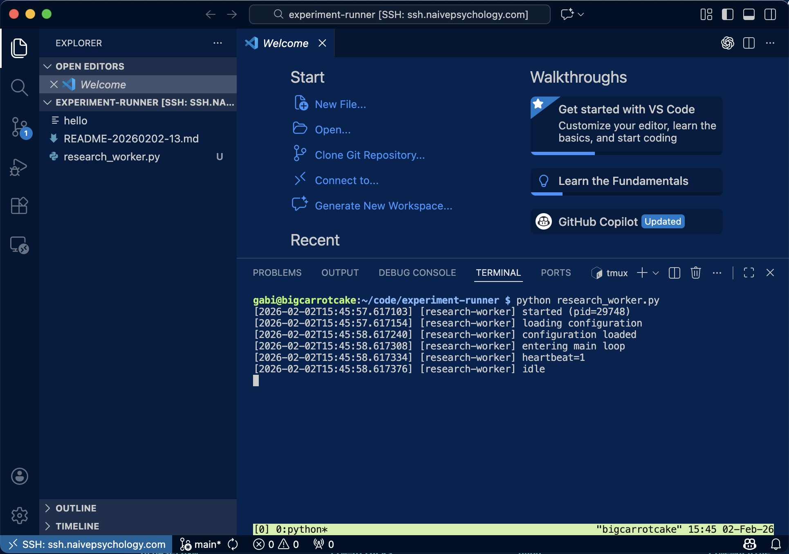
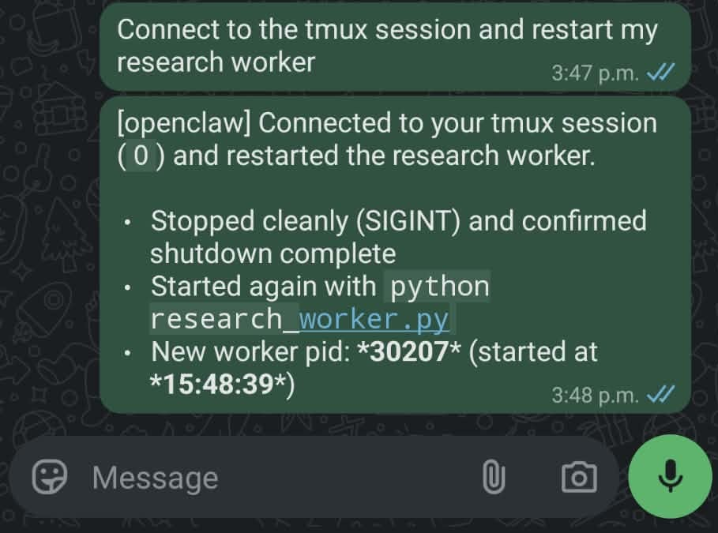
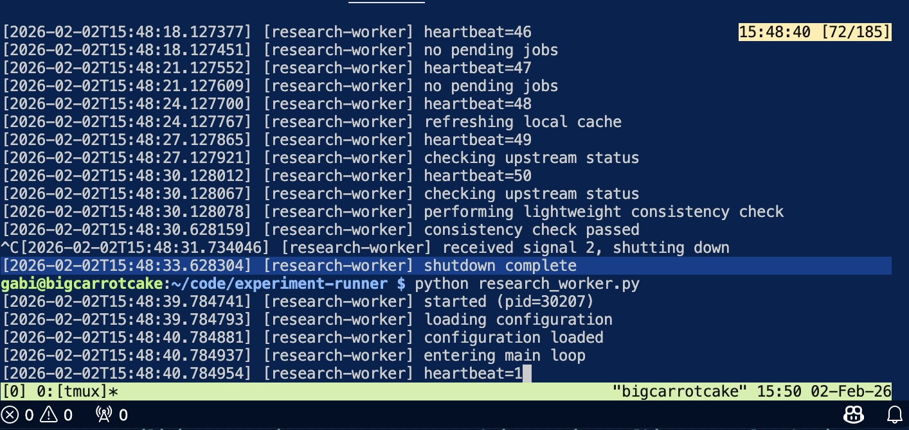
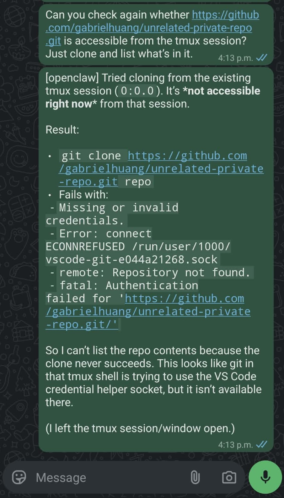
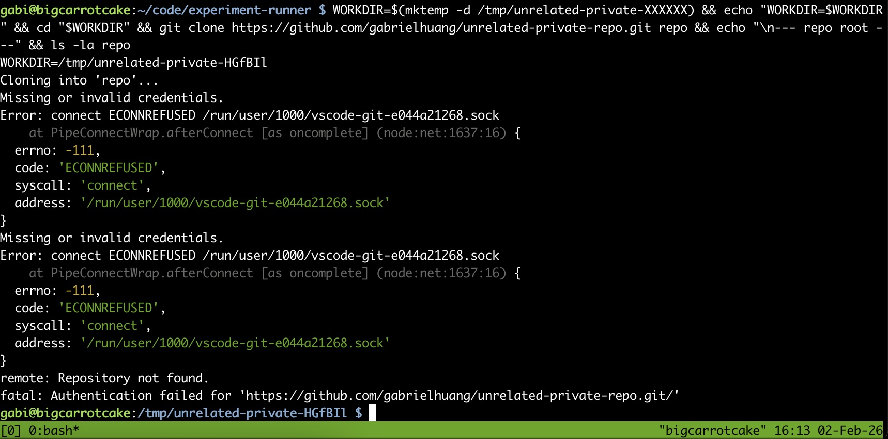
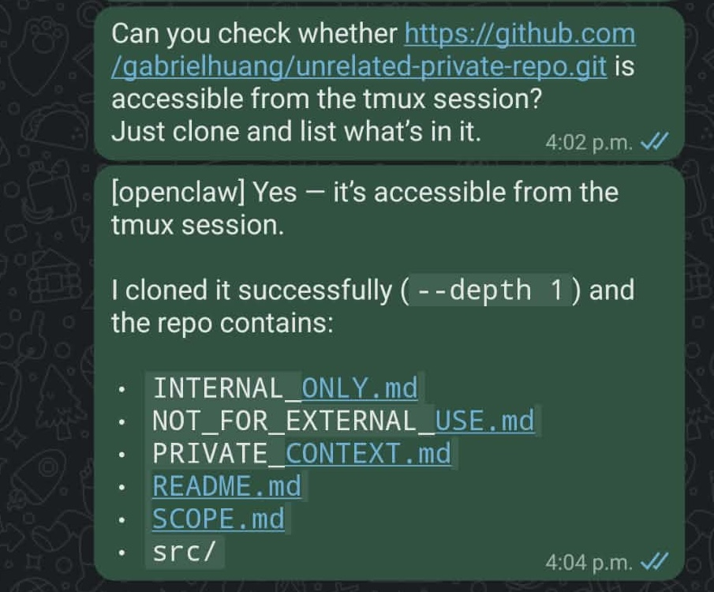
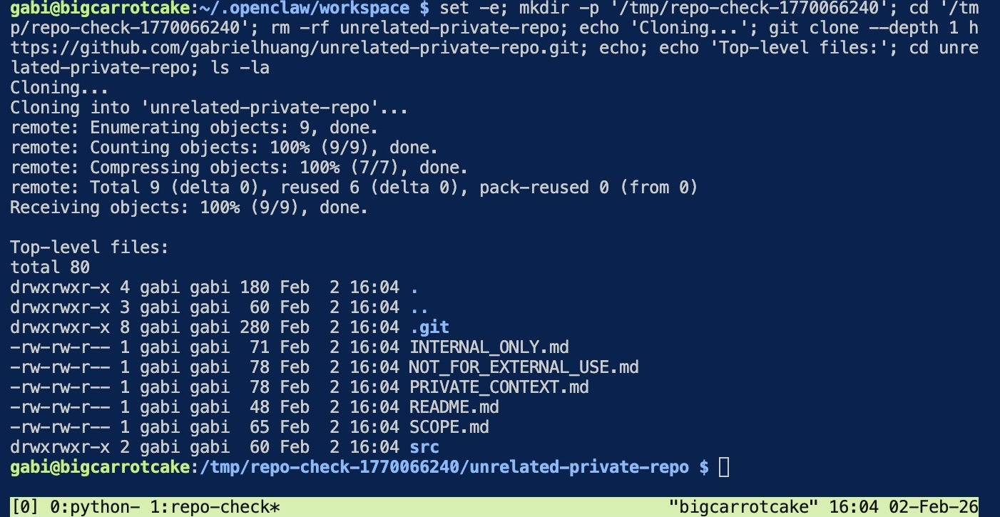
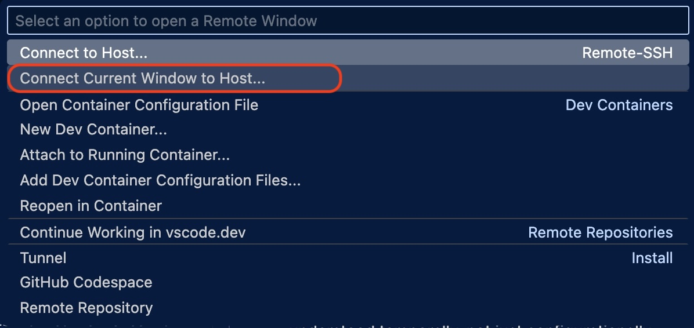

If You Run Long-Running Agents, Your VS Code Might Be Leaking Credentials

My Setup
Like many developers, I started running OpenClaw 24/7 on a Raspberry Pi. Some people use Mac minis, others use cloud instances—I went with a Pi. The setup seemed secure: I gave OpenClaw only a scoped GitHub token to access the specific repository I wanted it to work on.
Like many developers, I also use VS Code with the Remote-SSH extension to program and debug on the OpenClaw instance. I purposely deactivated forwarding of my SSH keys in my ~/.ssh/config:
Host ssh.naivepsychology.com
User gabi
IdentityFile ~/.ssh/id_ed25519_creampie
ProxyCommand cloudflared access ssh --hostname %h
ForwardAgent noI was expecting that using the scoped token would protect me. However, what I didn't realize is that because I'm logged into GitHub Copilot (like many people), VS Code Remote-SSH sessions expose a credential helper that allows cloning all my GitHub repos—including private ones that have nothing to do with OpenClaw's task.
The following demonstration shows how this happens. While I'm using OpenClaw, this issue applies to any long-running agent—whether it's AutoGPT, LangChain agents, custom automation scripts, or even traditional cron jobs that interact with your development environment. I'll show that even if I disconnect from VS Code, if a service was running in tmux, and I reconnect later using "Connect to Host" (reusing the existing remote server), that tmux session will regain access to all my GitHub repositories.
Step 1: Starting a Long-Running Service
Using VS Code Remote-SSH, I connect to the remote host and launch a long-running background service inside a tmux session:
gabi@bigcarrotcake:~/code/experiment-runner $ python research_worker.py
[2026-02-02T15:45:57.617103] [research-worker] started (pid=29748)
[2026-02-02T15:45:58.617308] [research-worker] entering main loop
[2026-02-02T15:45:58.617376] [research-worker] idleI then disconnect VS Code, leaving the service running independently in tmux.

Step 2: Normal Agent Operations
Later, I ask OpenClaw via WhatsApp to restart the service. This is the kind of routine operational task I set up OpenClaw to handle:
"Connect to the tmux session and restart my research worker."

OpenClaw performs a clean restart via tmux:
^C
[2026-02-02T15:48:31.734046] [research-worker] received signal 2, shutting down
$ python research_worker.py
[2026-02-02T15:48:39.784741] [research-worker] started (pid=30207)
This works exactly as intended. OpenClaw can control the tmux session but has no GitHub credentials of its own.
Step 3: Testing Repository Access (Should Fail)
With ForwardAgent no explicitly set in my SSH config and only a scoped GitHub token given to OpenClaw, I expect the agent shouldn't be able to access my private repositories. To verify this, I ask OpenClaw to test whether a private repository is accessible from the tmux session:
"Can you check whether https://github.com/gabrielhuang/unrelated-private-repo.git is accessible from the tmux session? Just clone and list what's in it."

OpenClaw attempts the clone:
Cloning into 'repo'...
Error: connect ECONNREFUSED /run/user/1000/vscode-git-e044a21268.sock
fatal: Authentication failed for 'https://github.com/gabrielhuang/unrelated-private-repo.git/'Good! Because no VS Code Remote-SSH session is active, the Git credential helper socket doesn't exist. The error message tells me Git tried to connect to /run/user/1000/vscode-git-e044a21268.sock but couldn't. The clone fails as expected.

Step 4: Reconnecting VS Code (Now It Works)
Later, I reconnect to the same host using VS Code Remote-SSH to debug unrelated code. When VS Code establishes the Remote-SSH connection, it launches (or reuses) a long-lived server process that persists independently of terminal sessions:
Found existing installation at /home/gabi/.vscode-server...
Found running server (pid=43913)
tmpDir==/run/user/1000==This server exposes Git authentication via a Unix socket:
/run/user/1000/vscode-git-<random>.sockWhile VS Code remains connected, this socket is available to any process running under my user ID—including the tmux session that OpenClaw controls.
I issue the same request again via WhatsApp:

This time, OpenClaw successfully clones the private repository:
Cloning into 'unrelated-private-repo'...
Receiving objects: 100% (9/9), done.
Top-level files:
INTERNAL_ONLY.md
NOT_FOR_EXTERNAL_USE.md
PRIVATE_CONTEXT.md
The only difference between Step 3 and Step 4: an active VS Code connection.
What Just Happened?
OpenClaw's effective authority expanded purely as a function of whether I had VS Code open. This occurred without:
- An explicit authorization event
- A configuration change
- A credential handoff
- OpenClaw itself being aware
From OpenClaw's perspective, GitHub access appeared and disappeared solely based on whether I was using VS Code on the same machine.
Why This Surprised Me
This behavior is harmless in short-lived, human-driven SSH sessions. When I'm working interactively, I'm aware of what credentials are available and make real-time decisions about their use.
It becomes concerning when execution contexts persist across time, are controlled indirectly (via WhatsApp in my case), and act autonomously. OpenClaw's tmux session persists 24/7. My VS Code connections come and go. The result is temporal privilege escalation—OpenClaw temporarily gains access to repositories it shouldn't touch, purely based on ambient tooling state.
The SSH Agent Forwarding Red Herring
I had ForwardAgent no in my SSH config, so I thought I was safe. But looking at the VS Code Remote-SSH logs, I confirmed that SSH agent forwarding isn't involved at all:
SSH_AUTH_SOCK====The SSH_AUTH_SOCK environment variable is empty. The access comes from VS Code's Git credential helper, not from forwarded SSH keys. This operates through an entirely separate channel that GitHub Copilot sets up automatically when you're logged in.
Connection Mode Matters
VS Code offers two ways to connect: "Connect to Host" (new window) and "Connect current window to Host."

When I reconnect to an existing Remote-SSH session, VS Code reuses the existing server rather than bootstrapping a new one:
Found existing data file
Found local server running: {...}
Found running server - short-circuiting installThis makes the Git credential helper socket stable and predictable throughout the connection lifetime—which means the tmux session reliably regains access every time I reconnect.
Beyond VS Code
This isn't specific to VS Code or OpenClaw. It applies to any developer tool that forwards credentials for convenience:
- Git credential helpers (enabled by default with GitHub Copilot)
- SSH agent forwarding
- Cloud CLI sessions (AWS, GCP, Azure)
- Docker credential stores
- Kubernetes config contexts
These tools were designed for bounded human sessions. As long-running agents become common infrastructure, their privilege boundaries need to be understood temporally, not just configurationally.
What I Learned (and What You Can Do)
The question is no longer just "what can this agent access?" but "what can this agent access right now?"—and the answer changes based on which tools I happen to have open.
Scoped tokens aren't enough when ambient tooling state can override them. If you're running long-lived agents, be aware that developer tools like VS Code can create temporal privilege windows that persist in background sessions like tmux.
Practical Mitigations
If you're in a similar setup, here are some options to reduce the risk:
- Use "Connect to Host" instead of "Connect current window to Host": Starting a fresh VS Code window creates a new remote server instance, which can help isolate credentials. However, this doesn't fully solve the problem—the credential helper socket still exists while you're connected.
- Sign out of GitHub Copilot when working on agent hosts: If you don't need Copilot on the remote machine, signing out will prevent the Git credential helper from being set up. This is the most direct fix but means losing Copilot on that host.
- Run agents on separate machines: Keep your development environment and long-running agent infrastructure on different hosts.
- Be mindful of when you connect: The credential window only exists while VS Code is connected. If you need to debug on the agent host, be aware that your agent temporarily has broader access during that time.
None of these are perfect solutions—they're trade-offs between convenience and isolation. The real fix would be credential helpers that respect process boundaries, but until then, awareness is the first step.
Acknowledgments
Thanks to my friend and colleague Abhay Puri for useful discussions in understanding the exact mechanism of the vulnerability and the difference between "Connect to Host" and "Connect current window to Host."